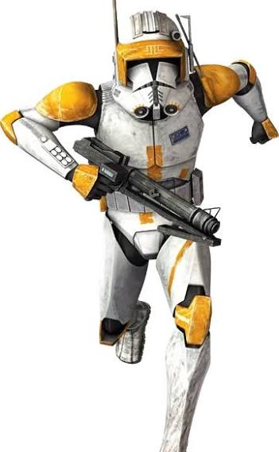

Cody, in the office avatar style
The supplied Commander Cody image sets the ivory and orange costume landmarks. Rex, Paz, and Wolffe set the finished rounded 3D family style. Cody replaces the research slot’s cosmetic identity while retaining research, research-bot, research-library, Opportunity Scout responsibilities, and the violet research accent.
Rollout review · Cody pose familyThe shown idle and four derived poses use the same ivory helmet, orange markings, compact side equipment, violet book badge, camera, and soft upper-left light. The source action pose is translated into a relaxed empty-handed office idle.
Identity and family references



Cody runtime poses
All runtime exports are 352 × 352 PNG/WebP pairs. Alpha-bottom measurements are 325 px for each pose, with the visible bounds normalized inside the shared character box.


Light and dark surfaces
The orange brow and shoulders, charcoal visor, ivory armor, and violet book badge remain separated without baked shadows or scene text.
Actual UI sizes
These are true CSS pixel samples: 32, 36, and 40 px checks, plus the current scene image-box cap (60 px) and profile portrait (64 px).
32 px36 px40 pxscene · 60profile · 6432 px36 px40 pxscene · 60profile · 64Handoff notes
The generated high-resolution concepts remain separate from runtime exports. Application-owned names, status, focus rings, selection treatment, and ground shadows stay outside the artwork. The research interface remains violet; orange belongs to Cody’s costume.
- Stable IDs and keys:
research,research-bot,research-library. - Five runtime pairs: PNG plus alpha WebP.
- Measured alpha bottom:
325 / 352for all five exports. - Current runtime display identity: Cody; Maul remains historical reference material.